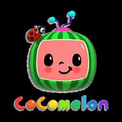

The toddler’s face is glowing green from the tablet in her hands, which shows a cartoon boy
singing a nursery
rhyme and dancing with dinosaurs. The toddler doesn’t know what dinosaurs are or what the lyrics mean, but
she’s so entranced that she doesn’t blink when her mother calls her name. “It’s literally like crack for
her,” says her mom Meng Zhou at their home in Redwood City, Calif.“It” is CoComelon, which may be the most
streamed children’s entertainment program in the world. The show was watched for 33 billion minutes last
year, more than the Netflix hits Squid Game and Bridgerton combined, according to market-measurement firm
Nielsen. CoComelon had 3.6 billion views on YouTube in January, according to Tubular, a social-video
measurement company, as many as three-quarters of whom were from outside the U.S. CoComelon was a Top 10
show on Netflix for more than 100 straight days in 2021, and its music is streamed 1.3 million times a day
on Spotify.
is not only a ratings juggernaut. It’s
also a model for a new approach to children’s
TV. The educators who developed hits like Sesame Street and SpongeBob SquarePants had to fight for years to
get their shows on the air. A room of adults could toil on a concept that helped kids learn important ideas,
only to find out viewers weren’t interested. CoComelon is part of a push to eliminate such guesswork. Its
parent company, Moonbug Entertainment, scours digital platforms like YouTube for popular kids’ programming,
buys them, and then tries to build them into even bigger phenomena, drawing on data from YouTube to figure
out what resonates with audiences. “Data is really at the heart of everything we do,” says Richard Hickey,
Moonbug’s head of creative. “With YouTube, you’ve got an audience there that literally tells you whether
they want to watch something or not, in real time.”It’s not entirely clear how much of CoComelon’s runaway
popularity stems from this formula and how much it owes to the pandemic, which put more kids in front of
screens. As parents juggled childcare and remote work, demand for kiddie content spiked 52% between January
2020 and February 2022, according to data from Parrot Analytics. Either way, the success of the show is
attracting big money. In November, Moonbug was acquired for $3 billion by two Disney alums backed by the
private-equity firm Blackstone. Since then, the company has rolled out a CoComelon live tour, a Spotify
podcast, and just about every form of merchandise you can imagine, from bubble machines to throw pillows.

Both parents and programming executives say there is something rare about the hold that CoComelon exerts on
babies and toddlers. You can see the proof in the dozens of TikTok videos showing kids who hear the marimba
tones of its theme song and come running. Zhou’s daughter’s third word, after Mama and Dada, was CoCo. “I
don’t think we’ve ever seen anything like it when it comes to generating kids’ streaming audiences,” says
Brian Fuhrer, senior vice president at Nielsen.As the show and others like it become inescapable, parents
are going to have to grapple with whether this type of children’s programming works for their families.
Sure, their kids may love it—but does that mean it’s any good for them?
CoComelon executives are debating a pacifier. Seated around a white table strewn with open MacBooks, they’re reviewing a soon-to-be-released episode focused on a character named Cody, a classmate and best friend of JJ, the show’s cartoon protagonist.The episode covers a rite of childhood: welcoming a younger sibling. Cody’s parents haven’t told him they’re having a baby. But as Cody and JJ sleuth around Cody’s home—singing an original song about solving an mystery, to the tune of “Teddy Bears’ Picnic”—they find a onesie, a rattle, and finally a pacifier, all objects that Cody has outgrown. An earlier version of the episode had Cody scorning the pacifier, saying it was “for babies.” But since the show is geared for children as young as 1, that sent the wrong message, Katie Nahab, a creative executive, explains to her colleagues. “Babies watch CoComelon, and they’re going to be looking at this and thinking, Oh, I shouldn’t want a pacifier, Cody doesn’t want a pacifier,” Nahab says. The script changed.Considering the needs of babies is a new thing in kids’ TV. Before screens were ubiquitous, most families had just a television or two, and children’s shows were geared toward a broad age group. (Sesame Street, for instance, was targeted at 3-to-5-year-olds but watched by a wider spectrum of kids as well as their parents.) When parents started having phones in their pockets, entrepreneurs realized they could make shows for even smaller kids and still get millions of viewers.CoComelon was created in 2005 by Jay Jeon, a father of two in Southern California. Jeon, who had directed some TV commercials, was trying to teach his kids the ABCs. He started working with his wife, a children’s-book author, to make videos to accompany the nursery rhymes they sang to their sons. They began uploading the cartoons to YouTube the following year under the brand name ABC Kid TV.Over time, the revenue from YouTube ads allowed Jeon to quit his job to focus on the show. In 2017, he made two key adjustments: building the show around JJ, a toddler with a single blond curl, and changing the format from 2-D animation to 3-D. Monthly viewership on YouTube nearly doubled in two months, to 238 million views by December 2017, according to Tubular. By December 2018, CoComelon was getting 2 billion views a month. In July 2020, Jeon sold his company, Treasure Studio, to Moonbug, which had been founded just two years earlier. Moonbug expanded the show to more audiences, inking deals with platforms in South Korea, China, and Europe. The company’s other big acquisitions include Little Baby Bum, a YouTube channel created by a British couple that revolves around nursery rhymes, and Blippi, a live-action YouTube show. The company is perpetually searching for the next sensation. In February, Moonbug acquired Little Angel, a network of YouTube channels featuring 3-D cartoons about a toddler named Baby John, who sings alongside his family as colorful subtitles play along the bottom of the screen.For a company with this formula, CoComelon was a “once-in-a-generation opportunity,” Andy Yeatman, a Netflix alum who is the managing director of Moonbug, tells me. The show is deceptively simple. Each episode is a self-contained song that lasts two to three minutes. Some of them are nursery rhymes like “Wheels on the Bus”; others are original earworms about the moments that make up a toddler’s life. The songs star JJ and his two siblings, older brother TomTom and older sister YoYo; their mom and dad; and JJ’s friends. There’s a lot of repetition and an inordinate amount of disembodied toddler giggles. Some of the lyrics feel as if they were written by a computer that doesn’t quite get rhyming. (A sample: “Good, good, carrots are good for you/ Yay, yay, yay, I love them, ooh.”) But there are little touches, experts say, that make the show appealing to younger kids in particular. The world depicted on CoComelon has bright colors and no sharp edges or corners. It is shot from a low perspective, so the viewer sees the world from a toddler’s level. The characters are unfailingly kind to one another; there is no conflict on CoComelon. And the topics are universal: viewers see JJ perform familiar tasks, like potty training and putting on shoes, and struggle with familiar challenges, like learning to share and getting sick. The show takes “every meaningful moment” in a toddler’s life and makes a song around it, says Patrick Reese, general manager of Moonbug.